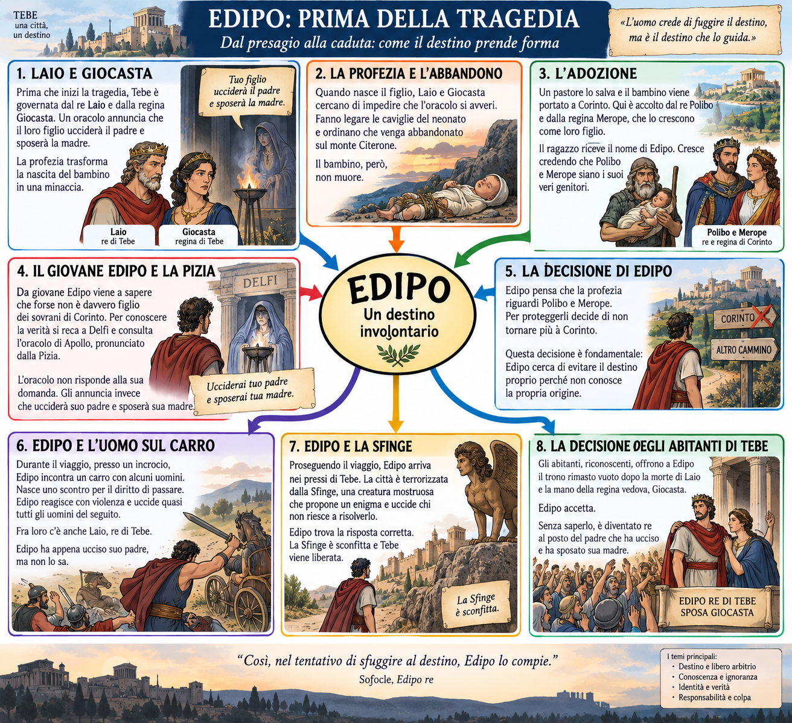
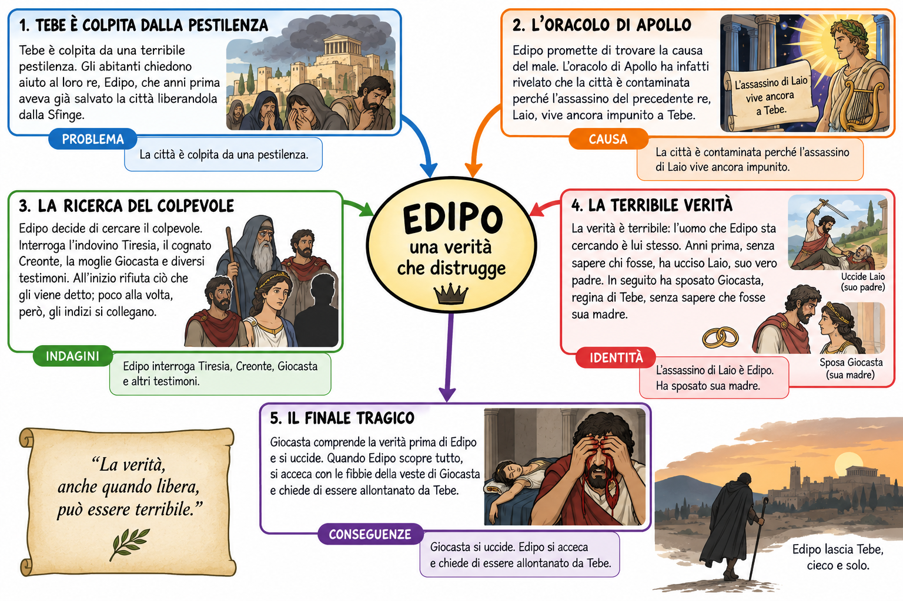
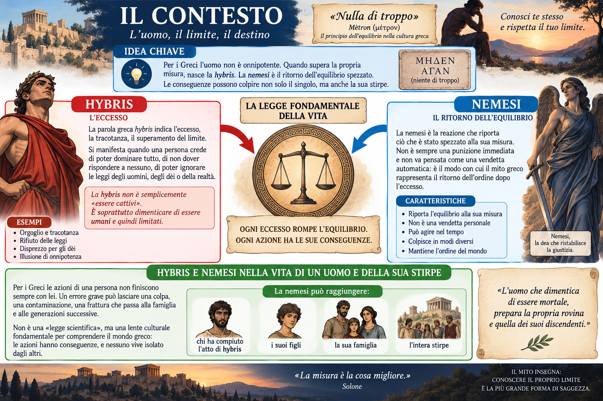
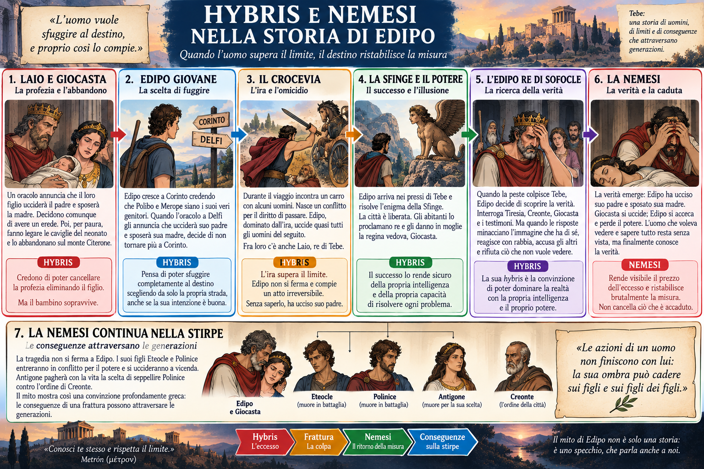

Rivedere i collegamenti
L’atlante delle idee
Le mappe e gli schemi illustrati del percorso. Aprili per ingrandirli o leggi la spiegazione testuale equivalente.
Il testo al centro
 Apri e ingrandisci ↗
Apri e ingrandisci ↗Leggi la mappa in parole
Il testo è al centro. Il ritorno all’antefatto ricostruisce ciò che è successo prima e le cause. L’apertura al contesto ricostruisce tempo, luogo, società, mentalità, valori e regole. Entrambi i movimenti conducono nuovamente al testo, rendendo più chiari fatti, parole e personaggi. Prima comprendiamo, poi giudichiamo.
Edipo re
 Apri e ingrandisci ↗
Apri e ingrandisci ↗Leggi la mappa in parole
La peste a Tebe avvia l’indagine di Edipo sull’assassinio di Laio. L’antefatto ricostruisce la profezia, l’abbandono sul Citerone, l’adozione a Corinto, la fuga, l’uccisione al crocevia e la vittoria sulla Sfinge. La vittoria conduce al trono e alle nozze con Giocasta. Tornando al testo scopriamo che Edipo è insieme investigatore, colpevole e figlio di Laio e Giocasta.
Edipo: prima della tragedia
{kind=link}

Apri e ingrandisci ↗Leggi lo schema in parole
Laio e Giocasta tentano di impedire la profezia abbandonando il figlio. Edipo viene salvato e cresce a Corinto; quando apprende dalla Pizia che ucciderà il padre e sposerà la madre, fugge da quelli che crede i suoi genitori. Al crocevia uccide Laio senza riconoscerlo, sconfigge la Sfinge, diventa re di Tebe e sposa Giocasta. Cercando di sfuggire al destino, lo compie senza saperlo.
Edipo re: il testo
{kind=link}

Apri e ingrandisci ↗Leggi lo schema in parole
La peste che colpisce Tebe avvia l’indagine. L’oracolo di Apollo rivela che la città è contaminata perché l’assassino di Laio è ancora impunito. Edipo interroga Tiresia, Creonte, Giocasta e altri testimoni; gli indizi mostrano poco alla volta che il colpevole cercato è lui stesso: ha ucciso suo padre Laio e sposato sua madre Giocasta. Giocasta si uccide; Edipo si acceca e chiede di lasciare Tebe.
Hybris e nemesi
 Apri e ingrandisci ↗
Apri e ingrandisci ↗Leggi la mappa in parole
Il limite viene oltrepassato dalla hybris; l’eccesso produce uno squilibrio cui risponde la nemesi. Nella lettura proposta la violenza e l’arroganza di Edipo preparano una caduta resa visibile dalla verità. La storia continua nella stirpe: Laio e Giocasta sono genitori di Edipo; Edipo e Giocasta sono genitori di Eteocle, Polinice, Antigone e Ismene. Il conflitto attraversa le generazioni. È una chiave interpretativa, non una regola per attribuire colpe a chi soffre.
Il contesto: hybris e nemesi
{kind=link}

Apri e ingrandisci ↗Leggi lo schema in parole
Per i Greci l’uomo non è onnipotente e deve conoscere il proprio limite. La hybris è l’eccesso, la tracotanza e il superamento della misura; la nemesi riporta all’equilibrio ciò che è stato spezzato e non coincide con una vendetta personale. Le conseguenze di un atto possono raggiungere chi lo ha compiuto, i suoi figli, la famiglia e l’intera stirpe.
Hybris e nemesi nella storia di Edipo
{kind=link}

Apri e ingrandisci ↗Leggi lo schema in parole
Laio e Giocasta cercano di cancellare la profezia abbandonando il figlio; Edipo tenta di sfuggire al destino, ma al crocevia l’ira lo porta a uccidere Laio. Il successo contro la Sfinge gli dà potere e fiducia nella propria intelligenza. Durante l’indagine rifiuta dapprima la verità; quando essa emerge, Giocasta si uccide ed Edipo si acceca e perde il potere. La nemesi rende visibile il prezzo dell’eccesso, mentre le conseguenze continuano nella stirpe con Eteocle, Polinice e Antigone.
Antigone
 Apri e ingrandisci ↗
Apri e ingrandisci ↗Leggi la mappa in parole
Creonte vieta la sepoltura di Polinice per difendere l’ordine della città. Antigone riconosce doveri divini e familiari anteriori al decreto e disobbedisce. Il conflitto fra legge umana e legge non scritta apre la domanda sui limiti del potere. Un confronto distinto con il presente conduce ai diritti fondamentali, alle costituzioni e ai principi di Norimberga: obbedire non basta a cancellare la responsabilità.
L’ira di Achille
 Apri e ingrandisci ↗
Apri e ingrandisci ↗Leggi la mappa in parole
L’antefatto conduce dal giudizio di Paride alla guerra. Il testo collega offesa di Agamennone, ira e ritiro di Achille, morte di Patroclo, ritorno al combattimento, morte di Ettore e incontro con Priamo. Il contesto spiega onore, gloria, premio e destino. La restituzione del corpo e i funerali di Ettore mostrano il ritorno alla misura umana: l’Iliade non racconta la successiva caduta di Troia.
Gli dèi e il Fato
 Apri e ingrandisci ↗
Apri e ingrandisci ↗Leggi la mappa in parole
Gli uomini compiono scelte; gli dèi intervengono con poteri e preferenze; il Fato esprime il limite ultimo. Gli dèi sono immortali ma non hanno un potere assoluto. Troia riceve protezione durante la guerra, ma nella tradizione è destinata a cadere; la morte di Achille precede la caduta. Questa è la sintesi della mappa originale: va letta insieme alla precisazione sulle diverse rappresentazioni greche del rapporto fra Zeus e destino.
Il testo al centro: schema di sintesi